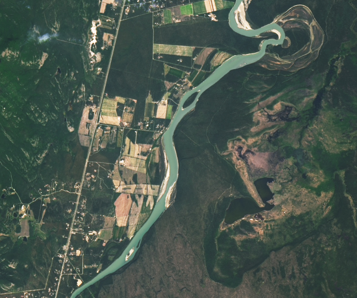

A Slumping Slide Into the Yukon River
The section of the Yukon River between Whitehorse and Lake Laberge is a popular route for canoers. The sinuous stretch in Canada’s Yukon Territory brings paddlers through a broad glacial valley punctuated by cutbanks, sandbars, and oxbow lakes. As of May 2025, adventurers might encounter a new geologic feature: a concave slump that took a bite out of the east bank of the river, toppled and tilted trees, and deposited such a massive mound of debris that the river narrowed to less than half its normal width.
The OLI (Operational Land Imager) on Landsat 8 captured a clear view (right) of the landslide debris on June 22, 2025. The left image shows the same area on June 19, 2024, before the landslide. The slide occurred on a forested bank just west of Swan Lake. Ground photographs indicate that it was a rotational landslide, or slump, meaning the surface of the rupture occurred along a curved surface and left a spoon-shaped depression. Note that the river water levels were lower in June 2025, so sandbars appear slightly larger than in June 2024.
Based on satellite imagery and reports from people on the river, scientists with the Yukon Geological Survey reported that the slide was initially 950 meters (3,100 feet) wide and 250 meters (820 feet) long and occurred between May 14 and May 18.
“It’s a compound landslide of clay, silt, and sand from Glacial Lake Laberge sediments deposited at the end of the glaciation,” the survey noted in a post on Facebook. “The slide extended below the riverbed, thrusting sediments and vegetation several meters above river level—creating spectacular classic landslide landforms.”
Geologists noted impressive back-tilted blocks and horst and graben structures visible in photos of the debris, but such features are likely short-lived. The debris could erode away “quite quickly” given the fine-grained materials involved, wrote Dave Petley, vice-chancellor at the University of Hull and author of The Landslide Blog. “Landslides of this type are part of the functioning of the natural system, providing the mechanism through which the river can meander across the plain,” he said.
The next stop for much of the landslide debris is likely “The Flats”—a shallow delta-like area of mudflats and sand downriver, where the Yukon River slows, widens, and becomes Lake Laberge.